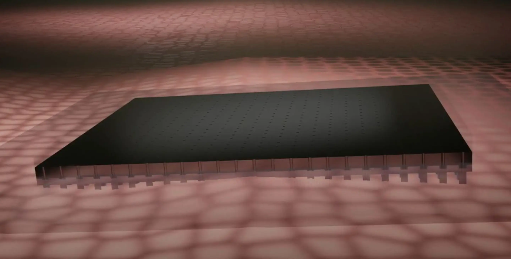

Silicon Chip Implant Marvel
Scientists have created a new silicon nanochip that can turn skin cells into different types of useful cells inside the body. This chip can change skin cells directly into blood vessels and nerve cells, which could help treat problems like strokes and other nerve-related issues.
The technology, called tissue nanotransfection (TNT), offers a way to heal and repair damaged tissues without needing complicated surgeries or transplants. So far, it has worked well in animal tests, and researchers are hopeful it will be successful in humans too.
This nanochip is a big step forward in medicine and could lead to new ways to treat serious injuries and diseases. In the future, it may change how doctors use cell therapy and create personalized treatments for patients.